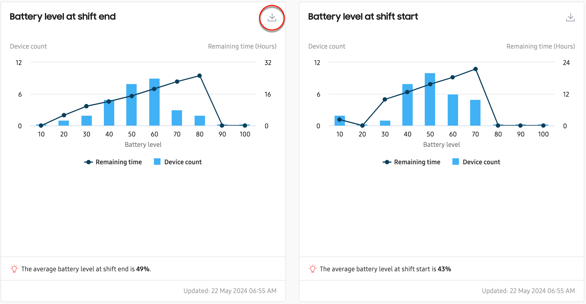
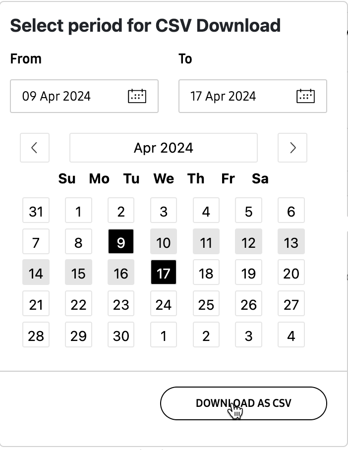

Battery levels at start and end of shift
Last updated June 26th, 2024
The Battery level at shift start and Battery level and shift end insights let you easily see your fleet’s battery levels, as well as the remaining battery time, at the start and end of each shift.
Main tile views

The main tile views for the shift start and shift end insights are identical. A chart displays your fleet’s device count and remaining battery hours on two separate graphs. On the x-axis, you can easily see your fleet’s battery levels, broken down into segments of 10% (1–10, 11–20, 21–30, and so on).
Hover over any segment on the chart to view the total number of devices with that battery level at the start or end of shift, and to view total associated device count and remaining battery hours.
At the bottom of the tile, you’ll see the average battery level at the start of end of the shift across the entire fleet.
Download insight data
To help you analyze the charging behavior of your fleet’s devices, you can also download your Battery level at shift start/end data directly from the main Dashboard tile. To do this:
- Click the Download icon near the top-right corner of each tile.
- On the calendar, select a data period between 1 and 60 days, then click DOWNLOAD AS CSV.
- Once the CSV file is ready, you’ll receive an email with instructions on how to download the file.

On this page
Is this page helpful?